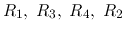
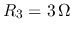

The Problems
All resistors in the following circuit are of and all current sources are of . Find the following currents and voltages in the circuit:
Solution: Convert all three non-ideal current sources into non-ideal voltage sources of in series with resistors, find the total current through this loop .Alternatively, by loop-current method arround loop through , we have , i.e., . We can further get
In the circuit below, , , , , , .
Do these two parts independently.
Solution:
First find the equivalent resistance used in both models:
Use superposition to find :
Due to voltage source alone
Use superposition to find :
Due to voltage source slone
Nordon's model can be converted to Thevenin's model: